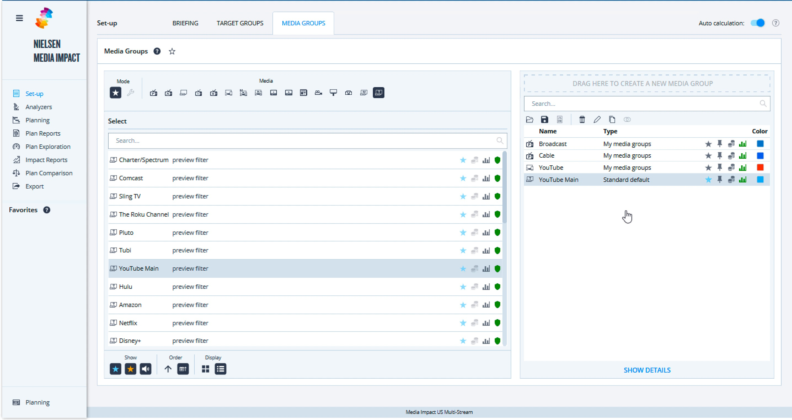
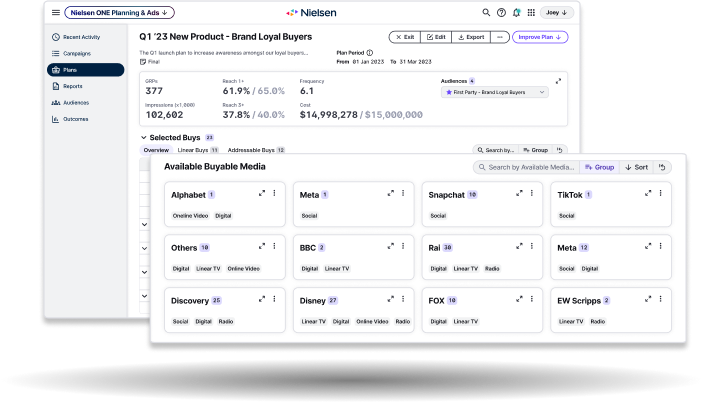

Nielsen ONE Planning · Enterprise SaaS
Bringing media planning into one workspace
I designed the media planning experience and brought stakeholders into workflow research to guide our decisions.

- Role
- Primary designer
- Duration
- Approximately 18 months
- Team
- About 12 across engineering, product & design
- Delivery
- Alpha launched April 2024
Overview
Planning here, analyzing elsewhere
Media planners needed to understand the estimated impact of their choices before buying media. Building a plan and analyzing it required different Nielsen tools, interrupting the process of evaluating and adjusting a plan. Nielsen ONE Planning brought media selection and reporting into one workspace, supporting the suite’s broader goal of consolidating roughly 100 overlapping legacy tools and reducing maintenance effort.
What testing exposed
Visible metrics, hidden selections
My first iteration put predicted metrics above the media table so planners could see the effect of adding a buy. Customer testing exposed problems in the interaction: editable cells were hard to recognize, the Add buys and Selected buys tabs hid selections, and the media list needed clearer organization.

We kept publisher grouping simple
I explored browsing options with a PM. We moved forward with publisher names, buyable-media counts, and categories; licensing costs ruled out logos. A quick internal test with three client-support colleagues found a visualization concept confusing, so adding more visual detail was not a clear way forward.
View the card and visualization explorations
The card options explored publisher recognition and different ways to show media details. Our internal test assessed a visualization concept with colleagues who knew customers’ use cases.
Choosing the next iteration required a clearer picture of how planners built, analyzed, and compared plans across tools.
Pause & align
A shared view of the workflow
The PMs had more than 15 years of media-planning experience and trusted me to test designs. To understand how people used the legacy tools together, I scheduled conversations with client support, sales, enablement, and US market product leadership, then mapped the workflow. Those conversations exposed gaps that our existing product knowledge could not answer.
With the VP of Design’s support, I initiated a user-journey workshop. Developing the workflow assumption took several weeks. We then interviewed five users with product leadership actively involved. Sharing findings openly brought stakeholders into the research, and the map became a reference for requirements and design discussions.
View the earlier working map
Design decisions
Keep the plan and its analysis together
The workflow map helped us frame a requirement: planners needed estimated impact before buying, and the reporting lived in another legacy tool. Bringing that reporting into the plan connected media selection with its predicted performance. Different businesses needed different views, so we offered a limited, customizable selection of reporting widgets.
Useful summaries, with room to go deeper
I kept complex analysis out of the overview widgets. The audience widget showed estimated reach as a percentage; opening detailed analysis let users choose metrics and select audiences to compare. This gave planners meaningful information at a glance and more control when they needed to investigate.
Keep editing available; defer guided setup
The second iteration kept available and selected buys visible together and used the empty state to guide the first action. I also proposed a stepper to break demanding setup work into stages, followed by an editable dashboard. It required more frontend work while capacity was limited before alpha, so I agreed to defer it. We retained planning and editing functionality; the stepper remained a proposed way to streamline setup.
Compare the deferred stepper with the reporting tabs
These tabs separate planning from reporting. The early Add buys and Selected buys tabs separated two parts of media selection, making users’ selections harder to find.
Impact & growth
From research through alpha
The workflow map became a reference for requirements and design decisions. I carried the work into development with interaction documentation and design context in tickets, and convinced the team to include UX review in scrum.
- Alpha launched · April 2024
- Six clients signed up for evaluation. Post-alpha adoption and usability results are not available.
- UX review in scrum
- Design reviews caught discrepancies in spacing, typography, and hover states during implementation.
Make decisions with the team
Testing gave me qualitative evidence to discuss with experienced PMs. Workshops and open research sharing gave us a shared reference for decisions. When frontend capacity became the constraint, I listened to Engineering’s perspective and agreed to defer the stepper while preserving the core functionality. These experiences shaped how I work with Product and Engineering: understand their perspectives, make the evidence visible, and decide together.
See Planning on Nielsen’s product page
